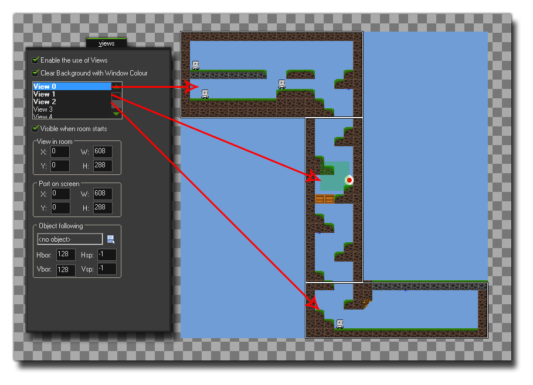

Syntax:
surface_create_ext(name, w, h);
参数 描述 name 所链接的画布元素名称。 w 创建的表面层的宽度。 h 创建的表面层的高度。
Returns:
实数
描述
这个函数允许你为已经存在网页上的canvas元素附著一个表面层，意味着可以有效的分割游戏的部分页面，绘制到页面内的不同地方。To that end, you must have defined the canvas element correctly within the *.html page of your game using the correct sizes and names that correspond to the surfaces you wish to create. 所以，你会有一个“主”画布，然后是辅助的表面层canvas元素，通过这个函数指定到正确的表面层。The following image is an example of how a page with three canvas elements would be set up:
The page layout can be tricky, especially if you wish all the elements to line up correctly, but once the hard task of creating the layout has been completed, you can then add this html file as the default page file for the game using the HTML5 Tab of the Game Options. The next thing you should do is set up your room and views, as each surface will need to be associated with a specific view to "capture" the game images (see the view variable view_surface_id[0...7]). The image below shows how the game room for the above canvas example would be set out: 
Finally you would then use this function to create the surfaces, with the name being the same as that used for the canvas elements and the size corresponding to the size of that same canvas. 这个函数将返回表面的索引名称，并储存在一个变量上，方便将来函数调用。When the surface is first created, it may contain "noise" as basically it is just an area of memory that is put aside for the purpose (and that memory may still contain information), so you may want to clear the surface before use with a function like draw_clear_alpha.
NOTE: This function is only available for use with the HTML5 module.

例如：
s1 = surface_create_ext("surface1", 192, 550);
s2 = surface_create_ext("surface2", 608, 186);
view_surface_id[1] = s1;
view_surface_id[2] = s2;
上述代码创建了两个不同大小的表面，并给他们每个都指定了不同的画布元素，然后为了在房间里捕捉正确的部分，给这两个表面层指定了两个视野。